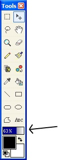
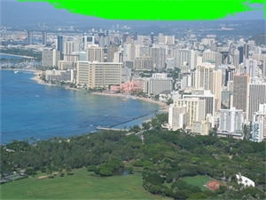

Tolerance
|
 The Tolerance settings for the color replacer and the paint bucket tool is located on the bottom of the Tools Window, above the foreground/background color. In the picture to the left the tolerance is set to 63%. This means that if the color you are filling with (Black in this case) will fill every pixel in its path if the pixel is within 63% of the black pixel. In simple terms, this means the higher tolerance the further the color you are filling with will reach. |
| Before paint bucket is applied | Paint bucket applied with 5% tolerance | Paint bucket applied with 10% tolerance |
|
 |